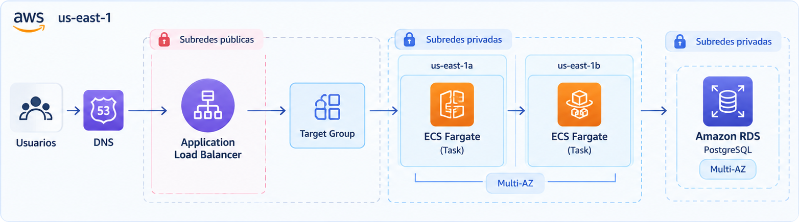

Arquitecturas dinámicas de alta disponibilidad, tolerancia a fallos, monitoreo proactivo y automatización con Infraestructura como Código (IaC) en Amazon Web Services:
sofi.apm.edu.pe al Target Group de SOFI y sitios al Target Group de clientes.0.50 vCPU / 1 GiB (API NestJS) y 0.25 vCPU / 512 MiB (Web y Bot) sin capacidad ociosa.awsvpc: ENI dedicada y Security Group asignado dentro de subredes privadas.
/api/health.sg-alb; no se abren rangos CIDR directos.sg-fargate, dejando la base de datos invisible a Internet./ecs/sofi-backend con ciclo de retención configurado a 30 días.HTTPCode_Target_5XX_Count > 5 o TargetResponseTime > 1.5s.Project, Environment, Owner, CostCenter y Compliance.template-etapa3.yaml, eliminando configuración manual en consola.| Capa | Servicio AWS | Configuración & Capacidad | Aporte a APM Inversiones EIRL |
|---|---|---|---|
| Balanceo L7 | Application Load Balancer | Multi-AZ (us-east-1a / 1b) · SSL/TLS ACM | Distribución inteligente de tráfico y tolerancia a caídas de zona. |
| Cómputo Serverless | Amazon ECS + AWS Fargate | 0.50 vCPU / 1 GiB (API) · 0.25 vCPU (Web y Bot) | Cero parches de SO; escalamiento horizontal en segundos. |
| Base de Datos | Amazon RDS PostgreSQL 16 | db.t3.micro Multi-AZ · 20 GB gp3 · Backups PITR | Persistencia ACID, aislamiento en subred privada y failover automático. |
| Almacenamiento | Amazon S3 + Glacier + EFS | S3 Standard (LMS) + Glacier (90 días) + EFS (Devs) | 11 nueves de durabilidad; workspace compartido para practicantes. |
| Seguridad & IAM | AWS IAM + SSM Session Manager | Grupos con PoLP · Dual Role Fargate · Cero SSH | Cero llaves estáticas; acceso seguro sin exponer puerto 22 a Internet. |
| Operaciones & IaC | CloudWatch + CloudFormation | Container Insights · Budgets ($60 USD) · YAML IaC | Despliegues 100% repetibles, trazabilidad y control de costos FinOps. |